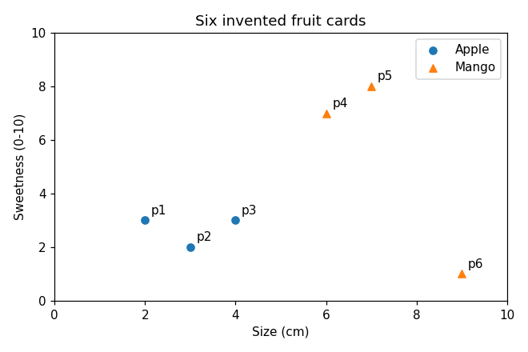

Mina gives Tuktuk a sealed envelope. It contains five measurement pairs, a question about mangoes and a request for a picture. The robot wants to import every tool immediately. Mina asks it to predict the answers on paper first. Rafi agrees to check the reasoning before he checks the screen.
Use this sheet after the seven Python tools lessons. Allow about 75 minutes: fifteen for pictures, twenty for hand calculations, twenty-five for coding and fifteen for explanation. Bring paper, a pencil and a prepared Python environment with the course CSVs. Attempt each question before consulting its worked answer.
Write both the value and shape when a calculation returns an array. For pandas questions, say whether your row address is a label or a position. For plots, explain what a dot, segment or bar means. A correct number without its interpretation can hide a mistaken method.
| Size | Sweetness |
|---|---|
| 2 | 3 |
| 3 | 2 |
| 4 | 3 |
| 6 | 7 |
| 7 | 8 |
State the shape, the number of dimensions and the meaning of a row. Circle the entry selected by zero-based [3,1]. Give the shape of the size column when kept as a one-column table.
| Label | Count | Mean size (cm) |
|---|---|---|
| apple | 5 | 3.4 |
| mango | 5 | 6.8 |
Which mean is larger? Does either label have more records? Explain why these fictional groups do not establish the size of every fruit sold in Rajshahi.

Identify the point unlike the other mangoes. Give one possible entry error and one possible valid explanation. Name the record information you would check before changing it.
The first seven numerical exam questions contain worked answers in this order. Award credit for intermediate totals and endpoint reasoning, not only the final lists.
Attempt code-reading quiz A through E without running their programs. They ask about a row broadcast, a preserved feature dimension, positional pandas selection, a grouped mean and an axis reduction. After writing your prediction, run the program and explain any difference in one sentence.
For the row broadcast, annotate each output entry with its source offset. For the positional selection, write row labels on one side and positions on the other. These small annotations expose different mistakes even when two programs happen to print the same number.
Use the first four practice problems as coding tasks. Task 1 builds a five-by-two array and reports feature totals. Task 2 reads tiny_fruits.csv and computes grouped counts and means for a requested column. Task 3 reads fruits.csv and builds aligned X and y after one label filter. Task 4 checks histogram boundaries, including the rightmost endpoint.
Keep the two CSV files beside your scripts and use their original headers. Test a small input before the full task. In the histogram task, include 0, 5 and 10 so every boundary rule is exercised. In the grouping task, run once for size_cm and once for sweetness rather than assuming every column has the same summary.
Work in pairs with paper fruit cards. One person selects or sorts complete records; the other writes matching labels. Swap roles and deliberately make one alignment error. Describe what went wrong without relying on an error message from Python.
Use the four written practice problems to discuss a corrected column broadcast, appropriate plot choices, display-mango sampling and the limits of judging pupils from group means. Include a fairness question: whose experiences could be absent if your class measures only the most visible examples?
These exercises teach inspection, not real scholarship allocation or fruit-market conclusions. Explain why a fictional dataset cannot supply evidence for a decision about an actual pupil. A more elaborate calculation would not repair that missing connection.
For each hand problem, give yourself one mark for the setup, one for the intermediate arithmetic and one for the interpretation. For code reading, explain the operator or selector that caused the result. For coding, compare multiple inputs and preserve units and label order. Discuss written answers with a partner rather than treating one phrase as the only acceptable response.
| Mistake | Revisit |
|---|---|
| Wrong interpreter or imports | Setting Up Your ML Toolbox |
| Strings treated as measurements | Python You Need for ML |
| Lost feature dimension | NumPy Arrays |
| Wrong offset direction or axis | Fast Maths with NumPy |
| Confused labels and positions | pandas DataFrames |
| Missing cells or leaked answers | Loading and Exploring a Dataset |
| Wrong plot or unsupported causal claim | Drawing Data with Matplotlib |
Before moving on, you should be able to name the input, output and interpretation of each tool. The next module begins with points and vectors, using these Python tools to support mathematical pictures.